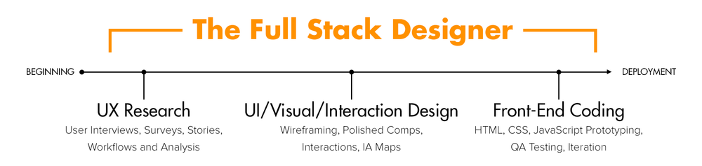

Skills & Tools
I translate user needs into intuitive digital experiences which: win fans, drive revenue, and ensure product success. I bring a mix of both soft and hard skills in website design, digital media, search engine optimization, and organizational development. My personal interests also include philosophy, meditation, and humanitarian projects. I have several years of experience helping to manage and develop non-profit organizations including holding executive leadership and board member positions.
User Experience Design
- understanding company goals and product requirements
- facilitate interviews and focus groups with various stakeholders
- competitor and customer analysis
- wire-frames and screen flows
- product storyboards
- sitemaps and information architecture
- user personas and usage scenarios
- usability testing
- optimizing performance
User Interface Design
- user interface mock-ups and rapid prototyping
- user-centered interaction models
- style guides for organizing all design assets
- typography, layout, and graphic design
- html, css, wordpress, webflow, etc.
Search Optimization
- experience with search engine optimization
- metrics and analytics for web, mobile, voice devices
- assisting with content development and editing sales copy
- working within brand guidelines to reinforce a brand’s style or voice
Tools | Software | Programs
- Adobe XD
- Figma
- Photoshop
- WordPress
- WebFlow
- Bootstrap
- Dreamweaver
- Google Analytics
- SEM Rush
- Moz SEO
- Miro